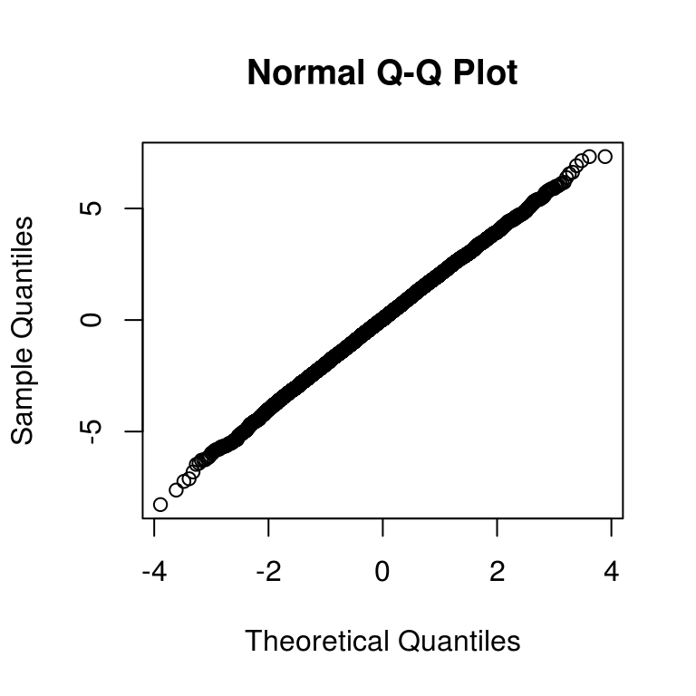

Chapter 3 Data-generating models
In the abstract, a function that implements a data-generating model should have the following form:
generate_data <- function(parameters) {
# simulations and calculations
return(sim_data)
}The function takes a set of parameter values as input, simulates random numbers and does calculations, and produces as output a set of simulated data. In practice, the parameters will typically consist of multiple values, including not only the model parameters, but also sample sizes and other study design parameters.
generate_data <- function(mu, sigma_sq, sample_size) {
N <- sum(sample_size)
g <- length(sample_size)
group <- rep(1:g, times = sample_size)
mu_long <- rep(mu, times = sample_size)
sigma_long <- rep(sqrt(sigma_sq), times = sample_size)
x <- rnorm(N, mean = mu_long, sd = sigma_long)
sim_data <- data.frame(group = group, x = x)
return(sim_data)
}
generate_data(mu = mu, sigma_sq = sigma_sq, sample_size = sample_size)## group x
## 1 1 -2.87254368
## 2 1 2.20188883
## 3 1 -1.45054780
## 4 1 -2.09701367
## 5 2 1.80174035
## 6 2 -0.92694182
## 7 2 0.44136841
## 8 2 -3.02336813
## 9 2 -1.50626383
## 10 2 -0.14336465
## 11 2 -1.26990916
## 12 2 -1.58370904
## 13 3 -1.31211461
## 14 3 -0.89526784
## 15 3 -0.20194682
## 16 3 -0.72520618
## 17 3 1.88107936
## 18 3 0.28472615
## 19 3 1.06879040
## 20 3 -0.31961076
## 21 3 -0.55463084
## 22 3 2.12284384
## 23 4 0.37876358
## 24 4 -0.17135239
## 25 4 0.05278304
## 26 4 1.30197123
## 27 4 0.30474176
## 28 4 0.10042395
## 29 4 1.07226019
## 30 4 0.67213706
## 31 4 -0.66253591
## 32 4 -1.73126993
## 33 4 -1.21758714
## 34 4 -1.388318453.1 Efficiency versus simplicity
An alternative approach to the above would be to write a function that generates multiple sets of simulated data all at once. For example, we could specify that we want R replications of the study and have the function spit out a matrix with R columns, one for each simulated dataset:
generate_data_matrix <- function(mu, sigma_sq, sample_size, R) {
N <- sum(sample_size)
g <- length(sample_size)
group <- rep(1:g, times = sample_size)
mu_long <- rep(mu, times = sample_size)
sigma_long <- rep(sqrt(sigma_sq), times = sample_size)
x_mat <- matrix(rnorm(N * R, mean = mu_long, sd = sigma_long), nrow = N, ncol = R)
sim_data <- list(group = group, x_mat = x_mat)
return(sim_data)
}
generate_data_matrix(mu = mu, sigma_sq = sigma_sq, sample_size = sample_size, R = 4)## $group
## [1] 1 1 1 1 2 2 2 2 2 2 2 2 3 3 3 3 3 3 3 3 3 3 4 4 4 4 4 4 4 4 4 4 4 4
##
## $x_mat
## [,1] [,2] [,3] [,4]
## [1,] -4.47206325 0.798261439 2.57557848 0.79130975
## [2,] 2.11140732 1.261582081 -1.11468903 4.99783799
## [3,] 1.31577365 -0.043265694 3.07623169 3.28232217
## [4,] -3.44897925 -0.907080491 -1.08790668 2.56231819
## [5,] 1.08188120 1.377107226 0.16784941 -0.07911264
## [6,] 2.61469014 -1.354155054 -1.14466518 -3.07949714
## [7,] -1.60607868 -1.288428389 -2.17032636 4.97725473
## [8,] -3.20520777 -0.867586995 1.39742435 3.42316088
## [9,] 0.58639995 -0.625402970 2.30983137 1.64604619
## [10,] -1.45547904 -1.650937961 -0.70341386 1.38214284
## [11,] 2.58372544 -1.654779585 3.21635012 -2.64333644
## [12,] -1.32961763 -0.501602537 1.51381880 -1.07846496
## [13,] 0.93404913 0.640929656 -1.50950626 0.20384771
## [14,] 0.27683673 -0.839093848 0.84920400 0.63944790
## [15,] -0.46620894 0.035363065 -2.24163526 -0.36808100
## [16,] 2.20129821 4.133973185 -1.88306128 1.46069234
## [17,] 0.88980507 -0.831646906 1.63506482 1.39477322
## [18,] -1.19335570 0.989784886 2.65148247 -2.64090763
## [19,] 0.09128187 -0.774347999 0.11562858 -1.58307301
## [20,] 1.44664637 0.693711464 1.35269608 -3.22316721
## [21,] -2.94407712 -0.019001956 -1.29961926 -3.73747914
## [22,] 0.61810518 2.733850805 1.48536836 -1.26226436
## [23,] -1.04096335 1.709002102 0.08671143 1.04590831
## [24,] 0.18262074 -0.012635395 -0.28562755 -1.42991960
## [25,] 0.58434765 -0.059961688 -1.54968244 -1.23928874
## [26,] 0.33979464 -0.766326224 -1.17603228 -1.82339552
## [27,] 0.31161656 -0.001258033 0.34323655 0.99595579
## [28,] 0.58341557 -0.694099943 -0.65594988 -0.96093720
## [29,] -0.72158889 -0.717350047 0.03075959 0.97537304
## [30,] -0.29319050 0.743638725 -0.55382511 0.25342618
## [31,] 1.24924124 -1.765012258 0.67002993 0.84424863
## [32,] -0.52604317 -2.394930717 0.49013781 -0.90091302
## [33,] -1.97162720 0.474858612 0.46776463 -0.68403202
## [34,] 1.52820999 1.520412362 1.42966914 1.49018761This approach is a bit more computationally efficient because the setup calculations (getting N, g, group, mu_full, and sigma_full) only have to be done once instead of once per replication. It also makes clever use of vector recycling in the call to rnorm(). However, the structure of the resulting data is more complicated, which will make it more difficult to do the later estimation steps. Furthermore, if R is large and each replication produces a large dataset, this “all-at-once” approach will entail generating and holding very large amounts of data in memory, which can create other performance issues. On balance, I recommend following the simpler approach of writing a function that generates a single simulated dataset per call (unless and until you have a principled reason to do otherwise).
3.2 Checking the data-generating function
An important part of learning to program in R—particularly learning to write functions—is finding ways to test and check the correctness of your code. Thus, after writing a data-generating function, we need to consider how to test whether the output it produces is correct. How best to do this will depend on the data-generating model being implemented.
For the heteroskedastic ANOVA problem, one basic thing we could do is check that the simulated data from each group follows a normal distribution. By generating very large samples from each group, we can effectively check characteristics of the population distribution. In the following code, I simulate very large samples from each of the four groups, check that the means and variances agree with the input parameters, and check normality using QQ plots:
check_data <- generate_data(mu = mu, sigma_sq = sigma_sq, sample_size = rep(10000, 4))
table(check_data$group) # check sample sizes##
## 1 2 3 4
## 10000 10000 10000 10000with(check_data, tapply(x, group, mean)) # calculate means by group## 1 2 3 4
## -0.007164546 0.017242693 -0.021191002 -0.015409675mu # compare to mean parameters## [1] 0 0 0 0with(check_data, tapply(x, group, var)) # calculate variances by group## 1 2 3 4
## 9.0725867 4.0402068 4.0300395 0.9752301sigma_sq # compare to variance parameters## [1] 9 4 4 1# check normality
with(check_data, qqnorm(x[group==1]))
with(check_data, qqnorm(x[group==2]))
with(check_data, qqnorm(x[group==3]))
with(check_data, qqnorm(x[group==4]))
3.3 Exercises
3.3.1 Shifted-and-scaled t distribution
The shifted-and-scaled t distribution has parameters \(\mu\) (mean), \(\sigma\) (scale), and \(\nu\) (degrees of freedom). If \(T\) follows a student’s t distribution with \(\nu\) degrees of freedom, then \(S = \mu + \sigma T\) follows a shifted-and-scaled t distribution. The following function will generate random draws from this distribution:
r_tss <- function(n, mean, sd, df) {
mean + sd * rt(n = n, df = df)
}
r_tss(n = 8, mean = 3, sd = 2, df = 5)## [1] 1.15117388 -6.90193701 3.49720420 -0.08530549 1.52312065 3.25928841
## [7] 3.56521798 9.79833810Modify that simulate_data function to generate data from shifted-and-scaled t distributions rather than from normal distributions. Include the degrees of freedom as an input argument. Re-run the Type-I error rate calculations from the previous question. Do the results change substantially?